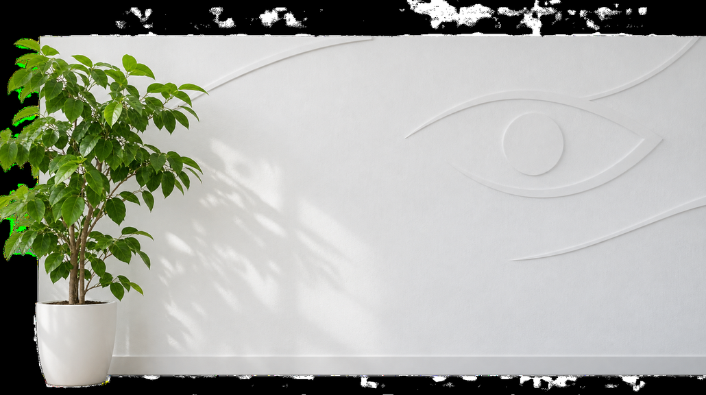
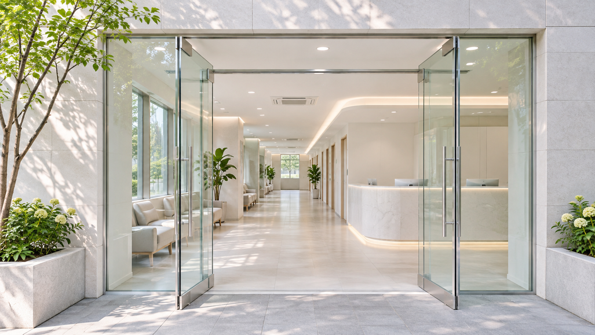
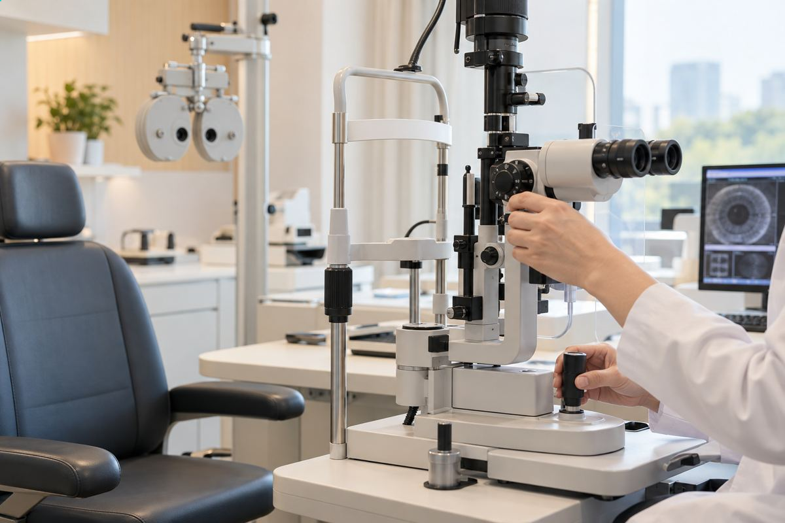
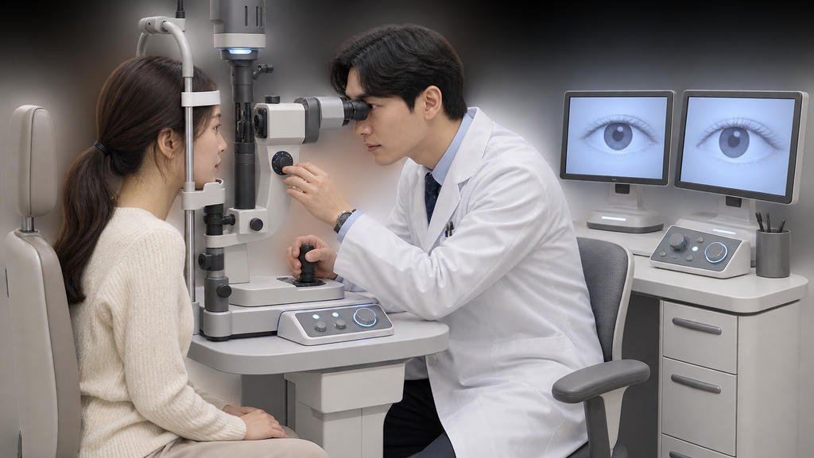
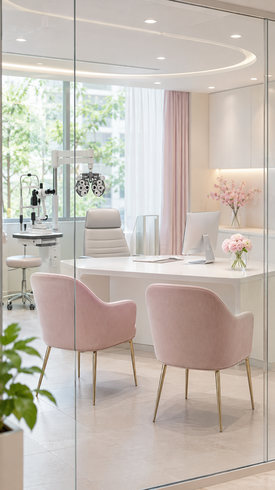
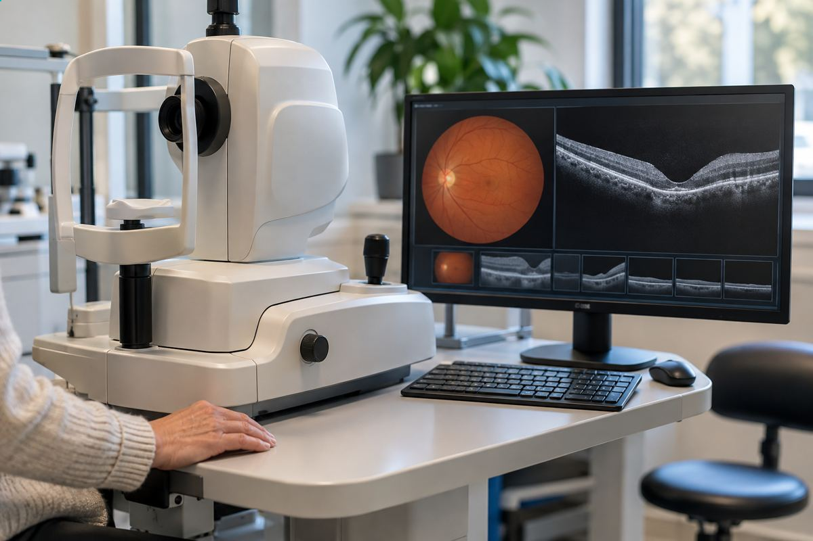

가까운 곳에서 믿고 상담받을 안과를 찾아봤어요
- 김**
- 수술일 2025.04.14
리뷰 내용
- 교정전
- 교정후
직접 다녀온 서울시원안과 후기
시력교정부터 백내장까지 진료하는 곳을 알아봤어요
처음 찾아간 안과에서 검사 상담을 받았어요.
며칠 전부터 눈이 쉽게 피곤하고
한동안 초점이 또렷하지 않아 걱정되는 마음에 검사를 예약했어요.

검색을 하다가 이곳을 알게 돼 상담을 받아봤어요.
대중교통으로 찾아가기 어렵지 않아 편했어요.
차를 가져갔을 때 주차 안내를 받을 수 있었고
병원에서 주차 안내도 해주셔서 편했어요.
대중교통으로도 찾아가기 수월한 편이었어요.
차로 이동해도 찾아가기 괜찮았어요.
주변 길을 찾는 일도 어렵지 않았고
도착해서 바로 안내를 받았어요.

다양한 안과 진료를 하고 있어 여러 항목을 상담할 수 있었어요.
여러 진료를 함께 볼 수 있다고 해서 관심이 갔어요.
검사를 꼼꼼하게 한다고 들어 기대했어요.
첫 방문에는 여러 검사를 차례로 받았어요.

접수를 마치고 시력과 안압부터 확인했고
각막 두께와 망막 사진, 눈물량을 차례로 확인했어요.
이렇게 여러 항목을 한 번에 검사받은 건 처음이었어요.
검사 장비도 잘 갖춰져 있었고 설명도 이해하기 쉬웠어요.
제 눈 상태에는 스마일 방식이 맞을 수 있다고 설명해주셨어요.
각막 두께와 회복 가능성에 관한 설명도 들었어요.
그 말을 들으니 긴장되면서도 설렜어요.
저도 언젠가 안경을 벗을 수 있을까 기대됐어요.

함께 간 지인도
처음 받는 검사라며 순서에 맞춰 진행했어요.
그분도 검사 결과에 관한 설명을 들었고
6개월 뒤 다시 확인하고 이후 수술 시기를 정하자고 했어요.

상담실이 아늑한 분위기라 편하게 이야기할 수 있었어요.
상담을 들을 때는
차분히 질문하고 답을 들을 수 있었어요.
기다리는 자리도 편했고
개인 물건을 두는 공간도 마련되어 있어
검사할 때는 앞에 보이는 표시만 보고 있으면 금방 끝났어요.
2. 스마일 방식의 수술도 함께 알아봤어요.
검진을 받고 수술 방식에 대해 더 알게 됐어요.
전체 과정이 정돈되어 있어 마음이 놓였어요.
설명에서는 절개 범위가 작은 방식이라고 들었고
각막 절개가 작다는 점이 마음에 들었어요.
회복과 일상 복귀 시점은 사람마다 다를 수 있다고 들었어요.
고도근시나 활동량에 따라 방법을 상담할 수 있다고 했어요.
상담 중에는 수술 방식에 대해
전용 레이저 장비를 사용하는 수술 방식이라고 설명해주셨어요.
병원에서 이 장비를 직접 갖추고 있다고 들었어요.
의료진의 경험에 관한 설명을 듣고 마음이 놓였어요.
저처럼 눈이 예민해 걱정되는 분이라면
작은 절개로 진행하는 방식이 제게는 매력적으로 느껴졌어요.
왜 이 수술을 많이 알아보는지 조금 알 것 같아요~~~^^
함께 간 선배도 간단한 치료를 바로 받았어요.
함께 간 분도 필요한 처치를 이어서 받았고
저도 동행하길 잘했다는 생각이 들었어요.
3. 수술 전 상담에서 여러 가지를 여쭤봤어요.

수술 전 상담에서 궁금한 점을 충분히 물어볼 수 있었어요.
서울시원안과는 눈 상태에 맞는 방법을
결정을 재촉하지 않아 제게 맞는 방법을 생각할 수 있었어요.
라섹이나 렌즈 삽입 같은 다른 방법도 있다고 들었어요.
생활 방식에 맞춰 고르는 게 좋다는 말을 듣고 부담을 덜었어요.
제 상황을 생각해 설명해준다는 느낌이 들었어요.
4. 진료 분야가 다양해 부모님과 와도 괜찮겠더라고요.
시력교정 외에도 여러 눈 진료를 함께 살펴볼 수 있었어요.
다른 눈 관련 진료에 대해서도
눈물길 수술 같은 중장년 진료도 꼼꼼히 봐주시는 것 같았어요.
가족과 함께 방문한 분들을 보았고
여러 안내를 받을 수 있었어요.
해외에서도 눈 진료를 받으러 오는 분들이 있다고 들었어요.
비용과 진행 방법을 함께 문의할 수 있어
다양한 장비와 기술을 이용해 수술한다고 설명해주셨어요.
궁금한 점을 정리하는 데 도움이 됐어요.
연세가 있는 저에게도 직원들이 차분히 응대해줬어요.
친절하게 안내해주신 점이 기억에 남아요.
진료를 마친 뒤에도 친절하게 안내해 주신 점이 오래 기억에 남았어요.
상담과 검사 과정이 믿음직하다고 느꼈어요.
눈 건강은 꾸준히 살펴야 한다는 설명도 들었어요.
검사 결과와 수술 방법을 꼼꼼히 확인하고
제게 맞는 방법을 결정하는 게 중요하다고 느꼈어요.
서울시원안과는 기계부터 사람까지
저는 설명을 듣고 한결 안심할 수 있었어요.
특히 시력교정 수술을 고민하고 있다면
장비와 진료 경험에 관한 설명을 들으며 안심했어요.
안경을 벗고 싶거나 가족의 눈 건강이 걱정돼 알아보는 분이라면
저는 상담과 검사를 받아보고 결정했어요.
출처 : 환자 블로그 후기
- 교정전
- 교정후